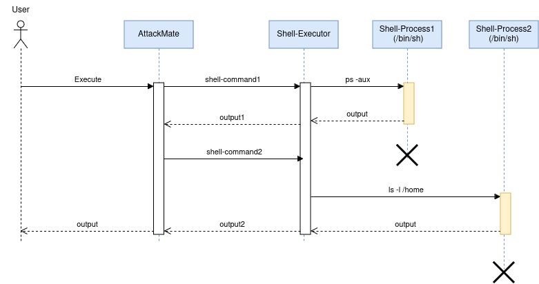
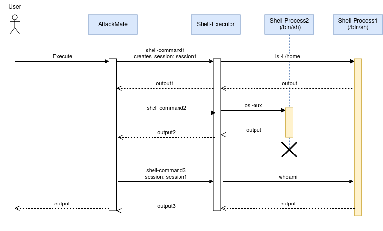

Sessions, Interactive
Many AttackMate commands support the creates_session, session, and interactive
options. This page explains these concepts and when to use them.
Session
By default, AttackMate executes all commands statelessly — each command runs in a fresh
environment. What “environment” means depends on the command type: a shell command
spawns a new /bin/sh process, an ssh command opens a new SSH connection, and so on.

This means that directory changes, environment variables, or open connections from one command are not visible to the next. To persist state across commands, AttackMate supports sessions.
Any command that supports the creates_session option will save its environment under
the given session name. Subsequent commands can then reference that name via session
to continue working in the same environment, as illustrated below.

Interactive
Most commands work by executing something and waiting for the process to finish before
collecting its output. This breaks down for interactive programs that wait for user input
and never terminate on their own — for example, opening vim from a shell command would
cause AttackMate to wait forever for output that never comes.
Interactive mode solves this by running a command for a limited time only. Instead of waiting for the process to finish, AttackMate reads output until no new output has arrived for a configurable timeout period, then moves on to the next command.
Warning
Commands executed in interactive mode MUST end with a newline character (\n).
The following example opens vim, remaps a key, types text, and saves the file — all
using a combination of sessions and interactive mode:
commands:
# Open vim and create a session:
- type: shell
cmd: "vim /tmp/test\n"
interactive: True
creates_session: vim
# Remap 'jj' to Escape in insert mode:
- type: shell
cmd: ":inoremap jj <ESC>\n"
interactive: True
session: vim
# Enter insert mode:
- type: shell
cmd: "o"
interactive: True
session: vim
# Type some text:
- type: shell
cmd: "Hello World"
interactive: True
session: vim
# Exit insert mode using the remapped key:
- type: shell
cmd: "jj"
interactive: True
session: vim
# Save and quit:
- type: shell
cmd: ":wq!\n"
interactive: True
session: vim